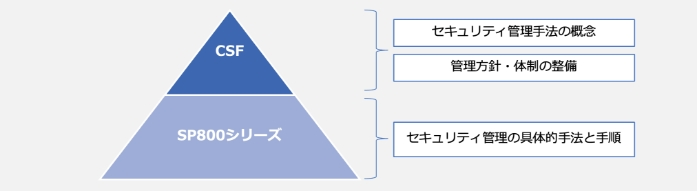
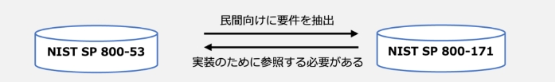

7-3-3. NIST SP 800
NIST SP 800シリーズとCSFの関連性
CSFは、NISTが定義するサイバーセキュリティ対策アプローチの中で最も上位に位置付けられており、セキュリティ管理手法の概念や管理方針・体制の整備など包括的な内容が記載されています。CSFの下位概念に位置付けられているのが、NIST SP 800シリーズです。実施すべきタスクと手順、推奨技術の特定など、セキュリティ管理の手法について具体的に明記されています。
図38. CSFとSP800シリーズの関係
NIST SP 800-53、NIST SP 800-171、NIST SP 800-161
NIST SP 800シリーズの中から、ガイドラインの一部を紹介します。
NIST SP 800-53
米国政府内の情報システムをより安全なものにし、効果的にリスク管理するためのガイドラインのことです。対象は連邦政府機関で、政府の機密情報（CI:Classified information）の保護を目的としています。
NIST SP 800-171
NIST SP 800-53から民間企業・組織向けに要件を抽出したものです。サプライチェーンに存在する、業務委託先や関連企業のすべてが準拠すべきセキュリティ基準を示しています。対象は、多くの民間企業・組織で、政府の機密情報以外の重要情報（CUI:Controlled Unclassified Information）の保護を目的としています。
NIST SP 800-161
調達から販売・供給までの一連のサプライチェーンに起因する様々なリスクに対して、組織として対応するためのガイドラインです。業務委託先や関連企業におけるセキュリティ対策を目的としています。
NIST SP 800-53とNIST SP 800-171は、以下のように保護する情報と対策を行う組織が異なりますが、どちらも密接に関連しているため2つ同時に参照する必要があります。
図39. NIST SP 800-53とNIST SP 800-171の関係